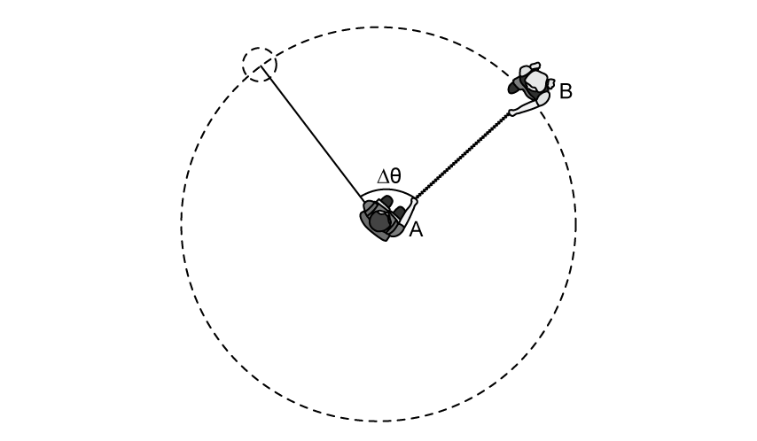
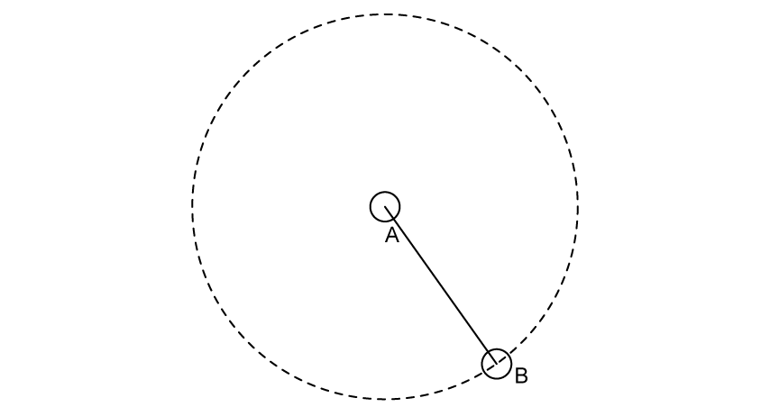
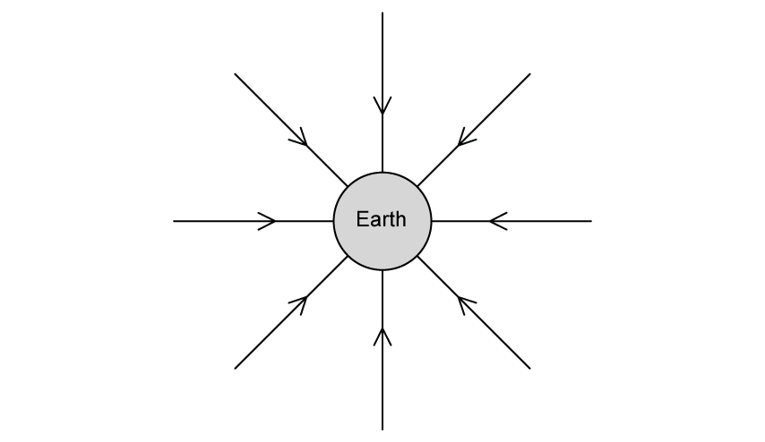
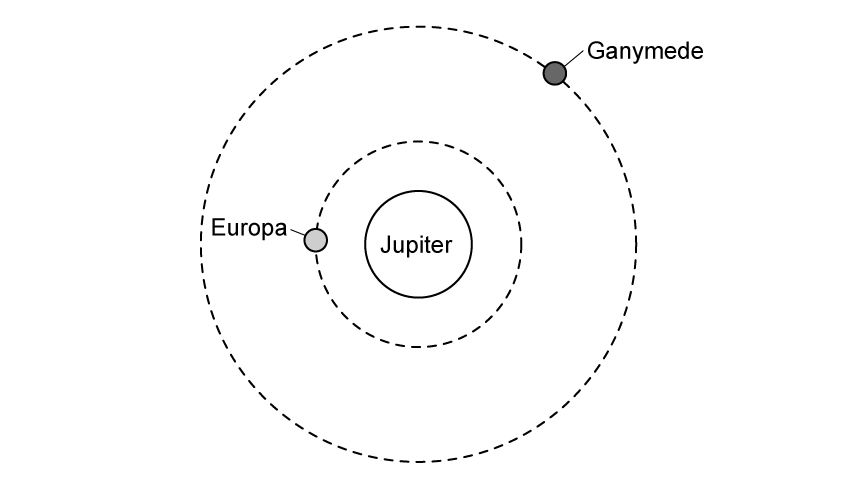
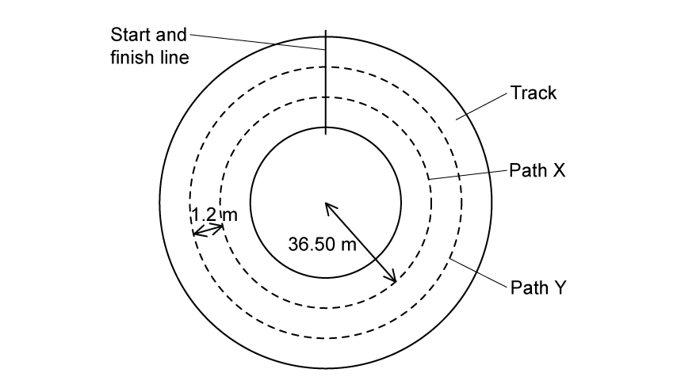
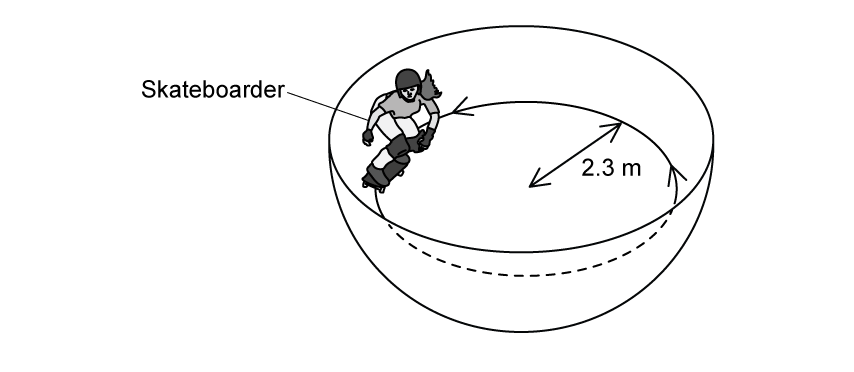
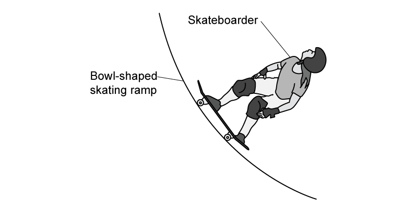

12 Motion in a circle
Angular motion, centripetal acceleration and centripetal force
Learning objectives
By the end of this chapter, you should be able to:
- define the radian and express angular displacement in radians;
- understand and use angular speed;
- recall and use \(\omega=2\pi/T\) and \(v=r\omega\);
- explain why a constant-magnitude force perpendicular to the motion produces centripetal acceleration;
- explain why centripetal acceleration produces circular motion at constant angular speed;
- recall and use \(a=r\omega^2\) and \(a=v^2/r\);
- recall and use \(F=mr\omega^2\) and \(F=mv^2/r\).
12.1 Kinematics of uniform circular motion
Angular displacement and the radian
For an arc of length \(s\) on a circle of radius \(r\), the angular displacement in radians is
\[\theta=\frac{s}{r}.\]
One radian is the angle subtended at the centre of a circle by an arc whose length is equal to the radius. Since the circumference is \(2\pi r\), one complete revolution is
\[\theta=\frac{2\pi r}{r}=2\pi\ \mathrm{rad}=360^\circ.\]
Therefore,
\[\theta(\mathrm{rad})=\theta(^\circ)\frac{\pi}{180}, \qquad \theta(^\circ)=\theta(\mathrm{rad})\frac{180}{\pi}.\]
Radians are dimensionless, but writing rad is useful because it identifies an angular quantity. Circular-motion equations such as \(s=r\theta\) require \(\theta\) in radians.
Angular speed, period and frequency
Angular speed is the rate of change of angular displacement:
\[\omega=\frac{\Delta\theta}{\Delta t}.\]
For uniform circular motion, the angular speed is constant. During one period \(T\), the radius turns through \(2\pi\) radians, so
\[\omega=\frac{2\pi}{T}=2\pi f,\]
where \(f=1/T\) is the frequency. The SI unit of angular speed is \(\mathrm{rad\,s^{-1}}\).
Every point on a rigid rotating object has the same angular speed, but points farther from the axis have a greater linear speed.
Linear speed and angular speed
Starting from \(s=r\theta\) and dividing by time gives
\[v=r\omega.\]
The instantaneous linear velocity is tangent to the circular path. Its magnitude can remain constant while its direction changes continuously. If the inward force is removed, the object initially moves along this tangent rather than radially outwards.
Useful equivalent forms are
\[v=\frac{2\pi r}{T}=2\pi rf.\]
12.2 Centripetal acceleration
Why circular motion is accelerated motion
Acceleration is the rate of change of velocity. In uniform circular motion, speed is constant but velocity is not, because the velocity direction changes continuously.
The acceleration:
- is directed towards the centre of the circle;
- is perpendicular to the instantaneous velocity;
- changes the direction of velocity without changing its magnitude.
Its magnitude is
\[a=\frac{v^2}{r}=r\omega^2=v\omega.\]
For fixed \(r\), doubling \(v\) makes \(a\) four times larger. For fixed \(\omega\), doubling \(r\) doubles \(a\). Always decide which quantity is being held constant before comparing two motions.
Centripetal force
The centripetal force is the resultant inward force required for circular motion:
\[F=ma=\frac{mv^2}{r}=mr\omega^2.\]
It is not an additional type of force. It is supplied by one force or by the inward resultant of several forces. Examples include:
- gravitational force for a moon or satellite;
- tension for an object moving in a circle on a string;
- friction for a car turning on a level road;
- a component of the normal contact force for a banked track or bowl.
In a force diagram, draw the real forces first. Resolve them, then identify their resultant towards the centre as the centripetal force.
Reliable calculation routine
- Identify the centre of the circular path and the radius measured from that centre.
- Convert all quantities to SI units. Period must be in seconds for \(\omega\) in \(\mathrm{rad\,s^{-1}}\).
- Choose the form containing the known quantities: \(v=r\omega\), \(a=v^2/r\), \(a=r\omega^2\), \(F=mv^2/r\), or \(F=mr\omega^2\).
- For orbital altitude, distinguish altitude above the surface from orbital radius measured from the planet’s centre.
- Check direction as well as magnitude: velocity is tangential; acceleration and resultant force are radial and inward.
Structured Questions
12.1 Kinematics of Uniform Circular Motion - Medium
Example 1 · Angular displacement and frequency · 12.1 SQ Medium Q1
(a) Explain why one complete revolution is equivalent to an angular displacement of \(2\pi\ \mathrm{rad}\). [1 mark]
(b) A particle following a circular path is observed to have an angular displacement of \(0.22\ \mathrm{rad}\). Express this angle in degrees (\(^\circ\)). Show your working and give your answer to an appropriate number of significant figures. [1 mark]
(c) Calculate the percentage error that is made when the angle \(0.22\ \mathrm{rad}\), as measured in degrees (\(\theta^\circ\)), is assumed to be equal to \(\tan(\theta^\circ)\) to four significant figures. Give your final answer to two significant figures. [2 marks]
(d) The particle travels the angle in part (b) in \(60\ \mathrm{ms}\). Calculate the frequency of the particle. [3 marks]
Show mark scheme / model answer
(a)
- For one revolution, \(s=2\pi r\) and \(\theta=s/r\), so \(\theta=2\pi\ \mathrm{rad}\).
[1]
(b)
- \(\theta=0.22\times180/\pi=12.605^\circ\approx13^\circ\) to two significant figures.
[1]
(c)
- \(\tan(12.605^\circ)=0.2236\).
[1] - Percentage error \(=(0.2236-0.2200)/0.2200\times100=1.6\%\).
[1]
(d)
- Convert \(60\ \mathrm{ms}=60\times10^{-3}\ \mathrm{s}\) and calculate \(\omega=\Delta\theta/\Delta t=0.22/(60\times10^{-3})=3.667\ \mathrm{rad\,s^{-1}}\).
[2] - \(f=\omega/(2\pi)=0.58\ \mathrm{Hz}\).
[1]
Example 2 · Angular and linear velocity in orbits · 12.1 SQ Medium Q2
(a) State the difference between angular velocity and linear velocity. [2 marks]
(b) A moon is in a circular orbit of radius \(r\) about a planet. The angular speed of the moon in its orbit is \(\omega\). The planet and its moon may be considered to be point masses that are isolated in space.
\(r\) and \(\omega\) are related by the expression
\[r^3\omega^2=\text{constant}.\]
Io and Europa are moons that are in circular orbits around the planet Jupiter. Data for Io and Europa are shown in Fig. 1.1.
| moon | radius of orbit / km | period of rotation around Jupiter / hours |
|---|---|---|
| Io | \(422\,000\) | \(42.5\) |
| Europa | \(670\,900\) |
Use the data from Fig. 1.1 to determine the angular speed of Europa in its orbit around Jupiter. [3 marks]
(c) Calculate the time period of Europa.
\[T=\underline{\hspace{3cm}}\ \text{years}\]
[2 marks]
(d) Determine the radius of the orbit of a moon that had double the linear speed of Io but a third of its time period. [2 marks]
Show mark scheme / model answer
(a)
- Angular velocity is the rate of change of angular displacement swept out by a radius.
[1] - Linear velocity is the rate of change of linear displacement; for circular motion it is tangential to the path.
[1]
(b)
- \(\omega_{\mathrm{Io}}=2\pi/(42.5\times3600)=4.1\times10^{-5}\ \mathrm{rad\,s^{-1}}\).
[1] - Use \(r_{\mathrm{Io}}^3\omega_{\mathrm{Io}}^2=r_{\mathrm{Europa}}^3\omega_{\mathrm{Europa}}^2\).
[1] - \(\omega_{\mathrm{Europa}}\approx2.0\times10^{-5}\ \mathrm{rad\,s^{-1}}\).
[1]
(c)
- \(T=2\pi/\omega=2\pi/(2.0\times10^{-5})=3.14159\times10^5\ \mathrm{s}\).
[1] - \(T=(3.14159\times10^5)/(365\times24\times60\times60)=9.96\times10^{-3}\ \mathrm{years}\).
[1]
(d)
- From \(v=2\pi r/T\), \(r=vT/(2\pi)\). Doubling \(v\) and reducing \(T\) to one third makes the new radius \(2/3\) of Io’s radius.
[1] - \(r=(2/3)(422\,000)=2.8\times10^5\ \mathrm{km}\).
[1]
Example 3 · Children rotating with a rope · 12.1 SQ Medium Q3
Two children A and B hold both sides of a rope \(70\ \mathrm{cm}\) long. Child A swings child B in a circular path, as shown in Fig. 1.1.

(a) Child B travels a full rotation in \(1.5\ \mathrm{s}\). Calculate the time taken for child B to travel a distance of \(0.45\ \mathrm{m}\). [3 marks]
(b) Show that the angular displacement \(\Delta\theta\) in this time is \(37^\circ\). [3 marks]
(c) Child A now swings child B round till they are making \(5\) revolutions every \(2\) seconds. Calculate the linear speed of child B. [3 marks]
(d) As the children are spinning anti-clockwise, the rope suddenly snaps at the position of child A and B shown in Fig. 1.2.

Draw the direction child B will continue to travel in the instance the rope is snapped. [1 mark]
Show mark scheme / model answer
(a)
- \(\omega=2\pi/T=2\pi/1.5=4.189\ \mathrm{rad\,s^{-1}}\).
[1] - Use \(\Delta s=r\omega\Delta t\), so \(\Delta t=0.45/(0.70\times4.189)\).
[1] - \(\Delta t=0.1545\ \mathrm{s}\approx0.15\ \mathrm{s}\).
[1]
(b)
- \(\Delta\theta=\omega\Delta t=4.189\times0.1545=0.647\ \mathrm{rad}\).
[2] - \(\Delta\theta=0.647\times180/\pi=37^\circ\).
[1]
(c)
- \(f=5/2=2.5\ \mathrm{Hz}\).
[1] - \(v=\omega r=(2\pi f)r=2\pi\times2.5\times0.70\).
[1] - \(v=11\ \mathrm{m\,s^{-1}}\).
[1]
(d)
- Draw an arrow from B tangent to the circle and pointing in the anti-clockwise direction (upwards and to the right in Fig. 1.2).
[1]
12.2 Centripetal Acceleration - Easy
Example 4 · Centripetal acceleration and a geostationary satellite · 12.2 SQ Easy Q1
(a) A centripetal force causes a centripetal acceleration. State two properties of the centripetal force that is required for this. [2 marks]
(b)
(i) State the equation for centripetal acceleration. [1 mark]
(ii) State the definition and unit of each variable in part (i). [3 marks]
(c) Calculate the angular speed of a satellite in a geostationary orbit. [3 marks]
(d) The satellite has an altitude of \(36\,000\ \mathrm{km}\). Calculate the centripetal acceleration of the satellite.
Radius of Earth \(=6400\ \mathrm{km}\). [3 marks]
Show mark scheme / model answer
(a)
- The force has constant magnitude.
[1] - It is perpendicular to the direction of motion, or directed towards the centre of the circle.
[1]
(b)
- (i) \(a=v^2/r\) (the source also accepts \(a=r\omega^2\)).
[1] - (ii) \(a\) is centripetal acceleration in \(\mathrm{m\,s^{-2}}\); \(r\) is the radius of the circular orbit in m; \(v\) is the linear speed in \(\mathrm{m\,s^{-1}}\).
[3]
(c)
- A geostationary satellite has \(T=24\ \mathrm{h}=86\,400\ \mathrm{s}\).
[1] - \(\omega=2\pi/T=2\pi/86\,400\).
[1] - \(\omega=7.3\times10^{-5}\ \mathrm{rad\,s^{-1}}\).
[1]
(d)
- Orbital radius \(r=(6400+36\,000)\ \mathrm{km}=42.4\times10^6\ \mathrm{m}\).
[1] - \(a=r\omega^2=(42.4\times10^6)(7.272\times10^{-5})^2\).
[1] - \(a=0.22\ \mathrm{m\,s^{-2}}\).
[1]
Example 5 · Identifying centripetal forces · 12.2 SQ Easy Q2
(a) State what is meant by centripetal force. [2 marks]
(b) State the centripetal force in each of the following situations:
(i) Venus orbiting the Sun; [1 mark]
(ii) a car driving around a roundabout; [1 mark]
(iii) rotating a ball tied to the end of a piece of string. [1 mark]
(c) The Moon orbits the Earth in a circular path. Explain, with reference to Fig. 1.1, why the path of the Moon is circular.

[2 marks]
(d) The centripetal force of the Moon is \(2.21\times10^{20}\ \mathrm{N}\). Calculate the distance of the Moon from the surface of the Earth.
Mass of the Moon \(=7.35\times10^{22}\ \mathrm{kg}\)
Radius of Earth \(=6.4\times10^6\ \mathrm{m}\)
Linear speed of the Moon \(=1023\ \mathrm{m\,s^{-1}}\) [4 marks]
Show mark scheme / model answer
(a)
- It is the resultant force required to keep a body moving in a circular path.
[1] - It is directed towards the centre of the circle.
[1]
(b)
- (i) gravitational force;
[1] - (ii) frictional force;
[1] - (iii) tension in the string.
[1]
(c)
- The field lines show that the gravitational force acts towards the centre of Earth, or the Moon’s velocity is perpendicular to the field lines.
[1] - The force perpendicular to the velocity produces centripetal acceleration and hence a circular path.
[1]
(d)
- \(F=mv^2/r\), so \(r=mv^2/F\).
[1] - \(r=(7.35\times10^{22})(1023)^2/(2.21\times10^{20})\).
[1] - \(r=3.4815\times10^8\ \mathrm{m}\).
[1] - Distance from the surface \(h=r-R=3.4815\times10^8-6.4\times10^6=3.42\times10^8\ \mathrm{m}\).
[1]
Arithmetic correction: the source model-answer line prints \(3.42\times10^6\ \mathrm{m}\), but its preceding values give \(3.42\times10^8\ \mathrm{m}\).
Example 6 · Jupiter’s moons · 12.2 SQ Easy Q3
Two of Jupiter’s moons, Ganymede and Callisto, orbit around Jupiter in a circular path as shown in Fig. 1.1. Fig. 1.1 shows the North pole of Jupiter, where both moons orbit counter-clockwise.

Source note: the original wording names Callisto, while the original figure labels the inner moon Europa.
(a) Identify, by drawing arrows, the following:
(i) the centripetal force on each moon. Label this \(F\); [2 marks]
(ii) the linear velocity of each moon. Label this \(v\). [2 marks]
(b) Both of Jupiter’s moons travel at a speed of roughly \(10\,000\ \mathrm{m\,s^{-1}}\). State which moon will have a longer time period. Explain your answer. [3 marks]
(c) The centripetal acceleration of Ganymede is \(0.11\ \mathrm{m\,s^{-2}}\). The mass of Ganymede is \(1.48\times10^{23}\ \mathrm{kg}\). Determine the centripetal force on Ganymede. [2 marks]
(d) Explain how the centripetal force of an object with the same mass and orbit as Ganymede would compare if it travelled with twice the angular speed. [1 mark]
Show mark scheme / model answer
(a)
- (i) Draw an arrow from the centre of each moon towards the centre of Jupiter and label it \(F\).
[2] - (ii) Draw an arrow from each moon perpendicular to \(F\), tangent to the orbit and pointing counter-clockwise; label it \(v\).
[2]
(b)
- Ganymede has the longer time period.
[1] - From \(v=2\pi r/T\), for the same \(v\), \(T\) is directly proportional to \(r\).
[1] - Ganymede has the larger orbital radius, so it has the longer period.
[1]
(c)
- \(F=ma=(1.48\times10^{23})(0.11)\).
[1] - \(F=1.6\times10^{22}\ \mathrm{N}\).
[1]
(d)
- \(F=mr\omega^2\), so doubling \(\omega\) makes the force four times greater.
[1]
12.2 Centripetal Acceleration - Medium
Example 7 · Runners on a circular track · 12.2 SQ Medium Q1
Two runners are running around a circular track. One runner follows path X and the other follows path Y, as shown in Fig. 1.1.

The radius of path X is \(36.50\ \mathrm{m}\). Path Y is parallel to, and \(1.2\ \mathrm{m}\) outside, path X. Both runners have mass \(75\ \mathrm{kg}\). The maximum lateral (sideways) friction force \(F\) that the runners can experience without sliding is \(57\ \mathrm{mN}\).
(a) Show that the maximum speed at which the runner on path Y can move is \(0.17\ \mathrm{m\,s^{-1}}\). [2 marks]
(b) Compare the centripetal acceleration and maximum speed of the runner on path X compared to path Y. [2 marks]
(c) Calculate the time taken for the runner in path X to complete 1 lap.
\[T=\underline{\hspace{3cm}}\ \text{minutes}\]
[2 marks]
(d) The runner on path Y has an ankle injury that has come back with a vengeance, so it takes them twice as long to complete 1 lap. Determine their new centripetal acceleration. [3 marks]
Show mark scheme / model answer
(a)
- \(r_Y=36.50+1.2=37.7\ \mathrm{m}\) and \(v=\sqrt{Fr/m}\).
[1] - \(v=\sqrt{(57\times10^{-3})(37.7)/75}=0.169\ \mathrm{m\,s^{-1}}\approx0.17\ \mathrm{m\,s^{-1}}\).
[1]
(b)
- Both runners have the same maximum centripetal acceleration because \(a=F/m\) and \(F\) and \(m\) are the same.
[1] - The runner on path X has the smaller maximum speed because \(v=\sqrt{Fr/m}\) and \(r_X<r_Y\).
[1]
(c)
- \(F=m\omega^2r=m(2\pi/T)^2r\), so \(T=\sqrt{4\pi^2mr/F}\). Substitution gives \(T=1376.95\ \mathrm{s}\).
[1] - \(T=1376.95/60=22.95\ \mathrm{min}\approx23\ \mathrm{min}\).
[1]
(d)
- Previous acceleration \(a_p=F/m=(57\times10^{-3})/75=7.6\times10^{-4}\ \mathrm{m\,s^{-2}}\).
[1] - Since \(a=4\pi^2r/T^2\), doubling \(T\) reduces \(a\) by a factor of four.
[1] - New \(a=(7.6\times10^{-4})/4=1.9\times10^{-4}\ \mathrm{m\,s^{-2}}\).
[1]
Example 8 · Skateboarder in a bowl-shaped ramp · 12.2 SQ Medium Q2
A bowl-shaped skating ramp can be modelled as a hollow sphere. A skateboarder with a horizontal speed follows a circular path inside the bowl of radius \(2.3\ \mathrm{m}\), as shown in Fig. 1.1.

The forces acting on the skateboarder are their weight \(W\) and the normal reaction force \(R\) of the ramp on the skateboarder. \(R\) is at an angle \(\theta\) to the horizontal.
(a) Sketch \(W\), \(R\) and \(\theta\) on Fig. 1.2.

[3 marks]
(b) Determine an equation for \(W\) in terms of \(\theta\) and the resultant force \(F\) on the skateboarder. [3 marks]
(c) Explain why force \(F\) is significant to the motion of the skateboarder. [2 marks]
(d) For the radius of the ramp in Fig. 1.1, the skateboarder travels at a speed of \(6.0\ \mathrm{m\,s^{-1}}\). Show that the angle \(\theta\) is \(32^\circ\). [3 marks]
Show mark scheme / model answer
(a)
- Draw \(R\) from the point of contact, normal to the ramp.
[1] - Draw \(W\) vertically downwards from the skateboarder’s centre of mass.
[1] - Label \(\theta\) between \(R\) and a horizontal line.
[1]
(b)
- Resolve \(R\): \(F=R\cos\theta\).
[1] - Vertical equilibrium gives \(W=R\sin\theta\).
[1] - Hence \(W/F=\tan\theta\) and \(W=F\tan\theta\).
[1]
(c)
- \(F\) provides the centripetal force.
[1] - It keeps the skateboarder moving in a circle.
[1]
(d)
- Use \(W=F\tan\theta\), with \(W=mg\) and \(F=mv^2/r\), giving \(\tan\theta=rg/v^2\).
[1] - \(\theta=\tan^{-1}[(2.3\times9.81)/(6.0)^2]\).
[1] - \(\theta=32^\circ\).
[1]
Chapter self-check
- Can you explain geometrically why one revolution is \(2\pi\) radians?
- Can you convert between \(T\), \(f\), \(\omega\) and \(v\) without mixing units?
- Can you explain why constant speed in a circle still involves acceleration?
- Can you identify which real force or force component supplies the centripetal force?
- Can you distinguish orbital radius from altitude above a surface?